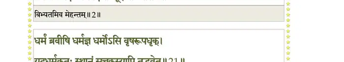
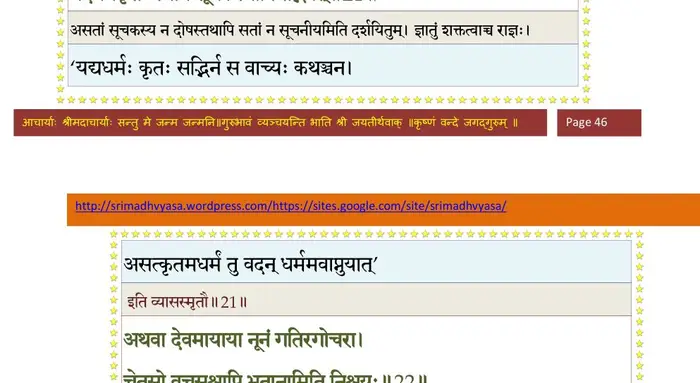
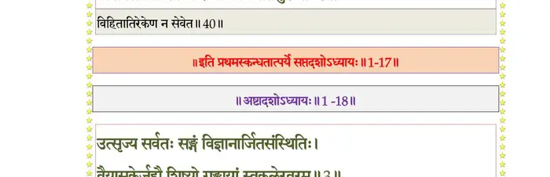

स्कन्ध 1 · अध्याय 17
श्लोक १
सूत उवाच–
तत्र गोमिथुनं राजा हन्यमानमनाथवत् ।
दण्डहस्तञ्च वृषलं ददृशे नृपलाञ्छनम्।। १ ।।
तत्र गोमिथुनं राजा हन्यमानमनाथवत् ।
दण्डहस्तञ्च वृषलं ददृशे नृपलाञ्छनम्।। १ ।।
श्लोक २
वृषं मृणालधवलं मेहन्तमिव बिभ्यतम् ।
वेपमानं पदैकेन सीदन्तं शूद्रपीडितम्।। २ ।।
वेपमानं पदैकेन सीदन्तं शूद्रपीडितम्।। २ ।।
भागवततात्पर्यनिर्णय

श्लोक ३
गाञ्च धर्मदुघां दीनां भृशं शूद्रपदाहताम् ।
विवत्सामश्रुवदनां कृशां यवसमिच्छतीम्।। ३ ।।
विवत्सामश्रुवदनां कृशां यवसमिच्छतीम्।। ३ ।।
श्लोक ४
पप्रच्छ रथमारूढः कार्तस्वरपरिच्छदम् ।
मेघगम्भीरया वाचा समारोपितकार्मुकः।। ४ ।।
मेघगम्भीरया वाचा समारोपितकार्मुकः।। ४ ।।
श्लोक ५
कस्त्वं मच्छरणे लोके बलाद्धंस्यबलौ बली ।
नरदेवोऽपि वेषेण नटवत्कर्मणाऽद्विजः।। ५ ।।
नरदेवोऽपि वेषेण नटवत्कर्मणाऽद्विजः।। ५ ।।
श्लोक ६
स त्वं कृष्णे गते दूरं सह गाण्डीवधन्वना ।
शोच्योऽस्यशोच्यान् रहसि प्रहरन् वधमर्हसि।। ६ ।।
शोच्योऽस्यशोच्यान् रहसि प्रहरन् वधमर्हसि।। ६ ।।
श्लोक ७
त्वं वा मृणालधवलः पादैर्न्यूनः पदा चरन् ।
वृषरूपेण किं कश्चिद्देवो नः परिखेदयन्।। ७ ।।
वृषरूपेण किं कश्चिद्देवो नः परिखेदयन्।। ७ ।।
श्लोक ८
न जातु कौरवेन्द्राणां दोर्दण्डपरिरम्भिते ।
भूतले निपतन्त्यस्मिन् विना त्वां प्राणिनां शुचः।। ८ ।।
भूतले निपतन्त्यस्मिन् विना त्वां प्राणिनां शुचः।। ८ ।।
श्लोक ९
मा सौरभेयानुशुचो व्येतु ते वृषलाद्भयम् ।
मा रोदीरम्ब भद्रं ते खलानां मयि शास्तरि।। ९ ।।
मा रोदीरम्ब भद्रं ते खलानां मयि शास्तरि।। ९ ।।
श्लोक १०
यस्य राष्ट्रे प्रजा मातर्हिंस्यन्ते साध्वसाधुभिः ।
तस्य मत्तस्य नश्यन्ति कीर्तिरायुर्भगो गतिः।। १० ।।
तस्य मत्तस्य नश्यन्ति कीर्तिरायुर्भगो गतिः।। १० ।।
श्लोक ११
एष राज्ञः परो धर्मो ह्यार्तानामार्तिनिग्रहः ।
अत एनं वधिष्यामि भूतद्रुहमसत्तमम्।। ११ ।।
अत एनं वधिष्यामि भूतद्रुहमसत्तमम्।। ११ ।।
श्लोक १२
कोऽवृश्चत्तव पादांस्त्रीन्सौरभेय चतुष्पदः ।
मा भूवंस्त्वादृशा राष्ट्रे राज्ञां कृष्णानुवर्तिनाम्।। १२ ।।
मा भूवंस्त्वादृशा राष्ट्रे राज्ञां कृष्णानुवर्तिनाम्।। १२ ।।
श्लोक १३
आख्याहि वृष भद्रं वः साधूनामकृतागसाम् ।
आत्मवैरूप्यकर्तारं पार्थानां कीर्तिदूषणम् ।
गलेऽनागस्यघं युञ्जन् सर्वतोऽस्य च तद्भयम्।। १३ ।।
आत्मवैरूप्यकर्तारं पार्थानां कीर्तिदूषणम् ।
गलेऽनागस्यघं युञ्जन् सर्वतोऽस्य च तद्भयम्।। १३ ।।
श्लोक १४
अनागस्स्विह भूतेषु य आगस्कृन्निरंकुशः ।
आहर्ताऽस्मि भुजं साक्षादमर्त्यस्यापि साङ्गदम्।। १४ ।।
आहर्ताऽस्मि भुजं साक्षादमर्त्यस्यापि साङ्गदम्।। १४ ।।
श्लोक १५
राज्ञो हि परमो धर्मः स्वधर्मस्यानुपालनम् ।
शासतोऽन्यान् यथाशास्त्रं अनापद्युत्पथानिह।। १५ ।।
शासतोऽन्यान् यथाशास्त्रं अनापद्युत्पथानिह।। १५ ।।
श्लोक १६
धर्म उवाच–
एतद्वः पाण्डवेयानां युक्तमार्ताभयं वचः ।
येषां गुणगणैः कृष्णो दौत्यादौ भगवान्वृतः।। १६ ।।
एतद्वः पाण्डवेयानां युक्तमार्ताभयं वचः ।
येषां गुणगणैः कृष्णो दौत्यादौ भगवान्वृतः।। १६ ।।
श्लोक १७
न वयं क्लेशबीजानि यतः स्युः पुरुषर्षभ ।
पुरुषं तं विजानीमः वाक्यभेदविमोहिताः।। १७ ।।
पुरुषं तं विजानीमः वाक्यभेदविमोहिताः।। १७ ।।
श्लोक १८
केचिद्वैकप्यवचस१ आहुरात्मानमात्मनः ।
दैवमन्ये परे कर्म स्वभावमपरे प्रभुम्।। १८ ।।
दैवमन्ये परे कर्म स्वभावमपरे प्रभुम्।। १८ ।।
श्लोक १९
अप्रतर्क्यादनिर्वाच्यादिति केष्वपि निश्चयः ।
अत्रानुरूपं राजर्षे विमृश स्वमनीषया।। १९ ।।
अत्रानुरूपं राजर्षे विमृश स्वमनीषया।। १९ ।।
श्लोक २०
एवं धर्मे प्रवदति स सम्राट् द्विजसत्तमाः ।
समाहितेन मनसा विदित्वा प्रत्यचष्ट तम्।। २० ।।
समाहितेन मनसा विदित्वा प्रत्यचष्ट तम्।। २० ।।
श्लोक २१
धर्मं ब्रवीषि धर्मज्ञ धर्मोऽसि वृषरूपधृक् ।
यदधर्मकृतः स्थानं सूचकस्यापि तद्भवेत्।। २१ ।।
यदधर्मकृतः स्थानं सूचकस्यापि तद्भवेत्।। २१ ।।
भागवततात्पर्यनिर्णय

श्लोक २२
अथवा देवमायाया नूनं गतिरगोचरा ।
चेतसो वचसश्चापि भूतानामिति निश्चयः।। २२ ।।
चेतसो वचसश्चापि भूतानामिति निश्चयः।। २२ ।।
भागवततात्पर्यनिर्णय
श्लोक २३
तपः शौचं दया सत्यं इति पादाः कृते कृताः ।
अधर्माङ्गैस्त्रयो भग्नाः स्मयसङ्गमदैस्तव।। २३ ।।
अधर्माङ्गैस्त्रयो भग्नाः स्मयसङ्गमदैस्तव।। २३ ।।
श्लोक २४
इदानीं धर्म पादस्ते सत्यं निर्वर्तसे यतः ।
तं जिघृक्षत्यधर्मोऽयमनृतेनैधितः कलिः।। २४ ।।
तं जिघृक्षत्यधर्मोऽयमनृतेनैधितः कलिः।। २४ ।।
श्लोक २५
इयञ्च भूर्भगवता न्यासितोरुभरा सती ।
श्रीमद्भिस्तत्पदन्यासैः सर्वतः कृतकौतुका।। २५ ।।
श्रीमद्भिस्तत्पदन्यासैः सर्वतः कृतकौतुका।। २५ ।।
श्लोक २६
शोचन्त्यश्रुकला साध्वी दुर्भगेवोज्झिताऽधुना ।
अब्रह्मण्याः नृपव्याजाः शूद्रा भोक्ष्यन्ति मामिति।। २६ ।।
अब्रह्मण्याः नृपव्याजाः शूद्रा भोक्ष्यन्ति मामिति।। २६ ।।
श्लोक २७
सूत उवाच–
इति धर्मं महीञ्चैव सान्त्वयित्वा महारथः ।
निशातमाददे खङ्गं कलयेऽधर्महेतवे।। २७ ।।
इति धर्मं महीञ्चैव सान्त्वयित्वा महारथः ।
निशातमाददे खङ्गं कलयेऽधर्महेतवे।। २७ ।।
श्लोक २८
तं जिघांसुमभिप्रे(त्य)क्ष्य विहाय नृपलाच्छनम् ।
तत्पादमूलं शिरसा समगाद्भयविह्वलः।। २८ ।।
तत्पादमूलं शिरसा समगाद्भयविह्वलः।। २८ ।।
श्लोक २९
पतितं पादयोर्वीरः कृपया दीनवत्सलः ।
शरण्यो नावधीच्छ्लोक्य आह चेदं हसन्निव।। २९ ।।
शरण्यो नावधीच्छ्लोक्य आह चेदं हसन्निव।। २९ ।।
श्लोक ३०
राजोवाच–
न ते गुडाकेशयशोधराणां बद्धाञ्जलेर्भो भयमस्ति किञ्चित् ।
न वर्तितव्यं भवता कथञ्चित् क्षेत्रे मदीये त्वमधर्मबन्धुः।। ३० ।।
न ते गुडाकेशयशोधराणां बद्धाञ्जलेर्भो भयमस्ति किञ्चित् ।
न वर्तितव्यं भवता कथञ्चित् क्षेत्रे मदीये त्वमधर्मबन्धुः।। ३० ।।
श्लोक ३१
त्वां वर्तमानं नरदेवदेहेष्वनुप्रवृत्तोऽयमधर्मयूथः ।
लोभोऽनृतं चौर्यमनार्यमंहो ज्येष्ठा च माया कलहश्च दम्भः।। ३१ ।।
लोभोऽनृतं चौर्यमनार्यमंहो ज्येष्ठा च माया कलहश्च दम्भः।। ३१ ।।
श्लोक ३२
न वर्तितव्यं तदधर्मबन्धो धर्मेण सत्येन च वर्तितव्ये ।
ब्रह्मावर्ते यत्र यजन्ति यज्ञैः यज्ञेश्वरं ब्रह्मवितानयज्ञाः।। ३२ ।।
ब्रह्मावर्ते यत्र यजन्ति यज्ञैः यज्ञेश्वरं ब्रह्मवितानयज्ञाः।। ३२ ।।
भागवततात्पर्यनिर्णय
श्लोक ३३
यस्मिन्हरिर्भगवानिज्यमान इष्टात्ममूर्तिर्यजतां शं तनोति ।
कामानमोघान् स्थिरजङ्गमानामन्तर्बहिर्वायुरिवेश आत्मा।। ३३ ।।
कामानमोघान् स्थिरजङ्गमानामन्तर्बहिर्वायुरिवेश आत्मा।। ३३ ।।
भागवततात्पर्यनिर्णय
श्लोक ३४
परीक्षितैवमादिष्टः स कलिर्जातवेपथुः ।
तमुद्यतासिमाहेदं दण्डपाणिमिवोद्यतम्।। ३४ ।।
तमुद्यतासिमाहेदं दण्डपाणिमिवोद्यतम्।। ३४ ।।
श्लोक ३५
यत्र क्व वाऽथ वत्स्यामि सार्वभौम तवाज्ञया ।
लक्षये तत्र तत्रापि त्वामात्तेषुशरासनम्।। ३५ ।।
लक्षये तत्र तत्रापि त्वामात्तेषुशरासनम्।। ३५ ।।
श्लोक ३६
तन्मे धर्मभृतां श्रेष्ठ स्थानं निर्देष्टुमर्हसि ।
यत्रैव नियतो वत्स्य आतिष्ठंस्तेऽनुशासनम्।। ३६ ।।
यत्रैव नियतो वत्स्य आतिष्ठंस्तेऽनुशासनम्।। ३६ ।।
श्लोक ३७
सूत उवाच–
अभ्यर्थितस्तदा तस्मै स्थानानि कलये ददौ ।
द्यूतं पानं स्त्रियः सूना यत्राधर्मश्चतुर्विधः।। ३७ ।।
अभ्यर्थितस्तदा तस्मै स्थानानि कलये ददौ ।
द्यूतं पानं स्त्रियः सूना यत्राधर्मश्चतुर्विधः।। ३७ ।।
श्लोक ३८
पुनश्च याचमानाय जातरूपमदात्प्रभुः ।
ततोऽनृतं मदः कामो रजो वैरञ्च पञ्चमम्।। ३८ ।।
ततोऽनृतं मदः कामो रजो वैरञ्च पञ्चमम्।। ३८ ।।
श्लोक ३९
अमूनि पञ्चस्थानानि ह्यधर्मप्रभवः कलिः ।
औत्तरेयेण दत्तानि न्यवसत्तन्निदेशकृत्।। ३९ ।।
औत्तरेयेण दत्तानि न्यवसत्तन्निदेशकृत्।। ३९ ।।
श्लोक ४०
अथैतानि न सेवेत बुभूषुः पुरुषः क्वचित् ।
विशेषतो धर्मशीलो राजा लोकपतिर्गुरुः।। ४० ।।
विशेषतो धर्मशीलो राजा लोकपतिर्गुरुः।। ४० ।।
भागवततात्पर्यनिर्णय

श्लोक ४१
वृषस्य नष्टांस्त्रीन् पादांस्तपः शौचं दयामिति ।
प्रतिसन्दध आश्वास्य महीञ्च समवर्धयत्।। ४१ ।।
प्रतिसन्दध आश्वास्य महीञ्च समवर्धयत्।। ४१ ।।
श्लोक ४२
स एष एतर्ह्यध्यास्त आसनं पार्थिवोचितम् ।
पितामहेनोपन्यस्तं राज्ञाऽरण्यं विविक्षता।। ४२ ।।
पितामहेनोपन्यस्तं राज्ञाऽरण्यं विविक्षता।। ४२ ।।
श्लोक ४३
आस्तेऽधुना स राजर्षिः कौरवेन्द्रः श्रियोल्लसन् ।
गजाह्वये महाभागश्चक्रवर्ती बृहच्छ्रवाः।। ४३ ।।
गजाह्वये महाभागश्चक्रवर्ती बृहच्छ्रवाः।। ४३ ।।
श्लोक ४४
इत्थं भूतानुभावोऽयमभिमन्युसुतो नृपः ।
यस्य पालयतः क्षोणीं यूयं सत्राय दीक्षिताः।। ४४ ।।
यस्य पालयतः क्षोणीं यूयं सत्राय दीक्षिताः।। ४४ ।।
।। इति श्रीमद्भागवते प्रथमस्कन्धे सप्तदशोऽध्यायः ।।